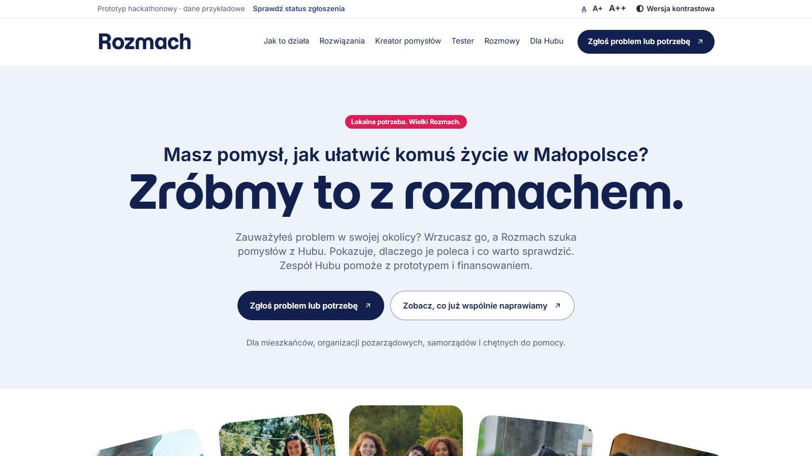
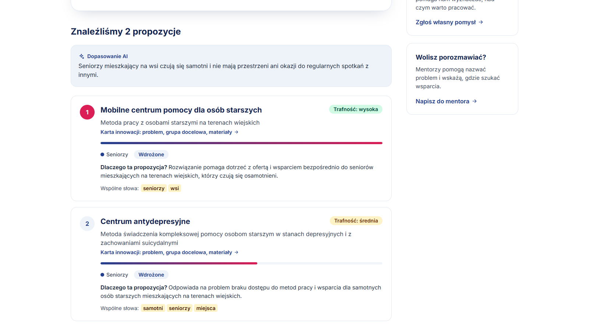
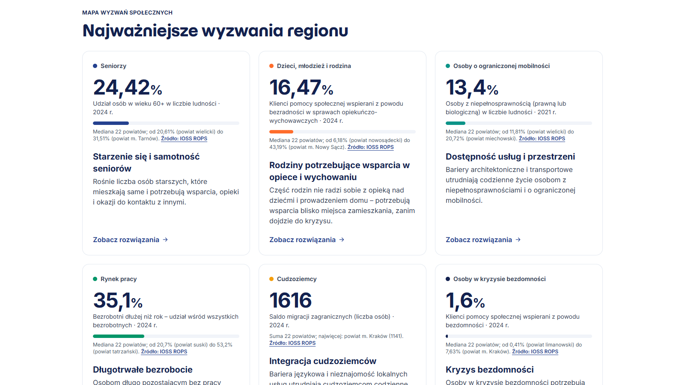
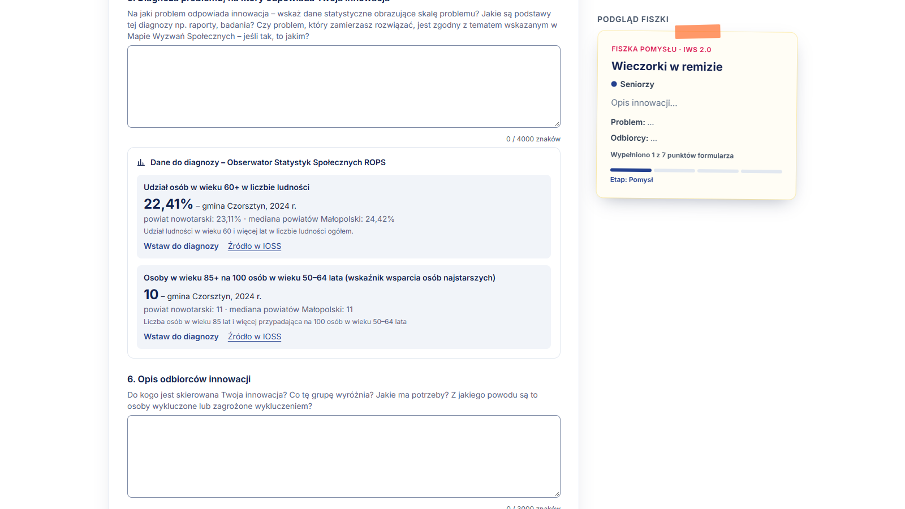
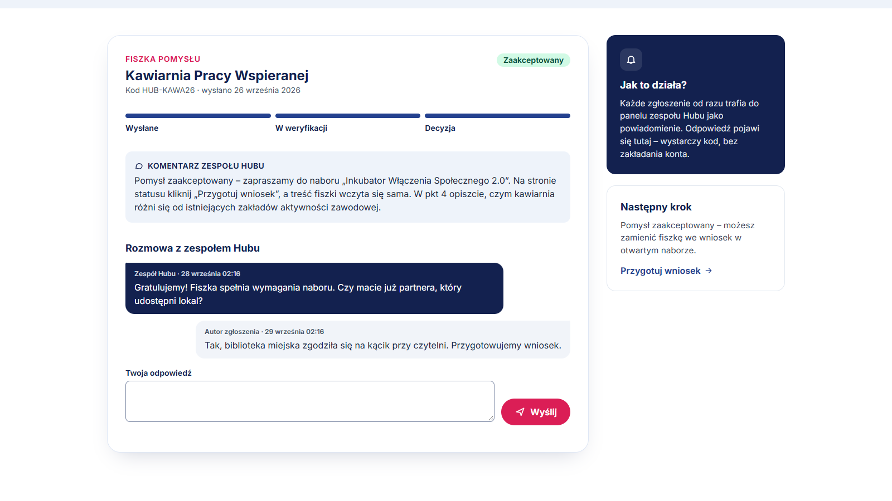
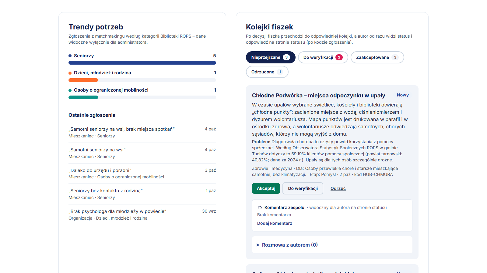

Rozmach – materiały do prezentacji
Ściąga dla zespołu: przekaz, układ slajdów (maks. 10 – wymóg formalny), liczby, odniesienie do kryteriów oceny i dane do demo. Zrzuty ekranu: folder docs/prezentacja/.
Jednym zdaniem: Rozmach to cyfrowe serce Małopolskiego Hubu Innowacji Społecznych – łączy zgłoszone potrzeby mieszkańców ze sprawdzonymi innowacjami z Biblioteki ROPS i z ludźmi, którzy pomogą je wdrożyć, a nowy pomysł prowadzi od krótkiej fiszki do wniosku o grant.
- Problem: potrzeby, wiedza o sprawdzonych rozwiązaniach i ludzie są rozproszeni; droga od pomysłu do grantu jest długa i sformalizowana.
- Wyróżniki: AI z uzasadnieniem (człowiek decyduje), prawdziwe dane ROPS (Biblioteka + Obserwator Statystyk), zgodność z formularzem IWS 2.0, kod zgłoszenia zamiast konta, pełna dostępność (WCAG 2.1 AA).
Proponowany układ prezentacji (10 slajdów)
1
Tytuł
Rozmach – cyfrowe serce Małopolskiego Hubu Innowacji Społecznych.
Hasło: „Lokalne potrzeby. Wspólne możliwości.” Nazwa zespołu, link do demo.

01-strona-glowna.png
2
Problem
Dobre inicjatywy są, ale potrzeby, wiedza i ludzie są rozproszeni.
Wyzwania z briefu: starzenie się, samotność, wykluczenie cyfrowe, dostęp do usług. Ok. 200 innowacji ROPS – trudno je znaleźć i przenieść do swojej gminy.
grafika / ikony:
potrzeba · wiedza · ludzie
(bez zrzutu)
3
Rozwiązanie w skrócie
Zgłoś potrzebę → AI znajdzie sprawdzone rozwiązanie → Hub pomoże z wdrożeniem i grantem.
Dla kogo: mieszkańcy i NGO, samorządy, zespół ROPS, eksperci. Bez zakładania konta.
schemat 4 kroków
(sekcja „Jak działa Rozmach”
na stronie głównej)
4
Matchmaking z AI (moduł obowiązkowy)
Opis własnymi słowami → sprawdzone innowacje z wyjaśnieniem „dlaczego”.
Plus podobne zgłoszenia innych osób i prawdziwe dane o wyzwaniu. Gdy AI niedostępne – wyszukiwanie po słowach kluczowych.

02-dopasowanie.png
5
Zasobnik wiedzy
Mapa Wyzwań na prawdziwych danych ROPS + 114 innowacji z filmami.
Wskaźniki z Obserwatora Statystyk Społecznych dla 22 powiatów i gmin; karty innowacji z odtwarzaczem filmu i materiałami; trendy potrzeb tylko dla admina.

03-mapa-wyzwan.png · 04-karta-z-filmem.png
6
Od pomysłu do grantu
Fiszka → asystent AI → dane o gminie → kod → wniosek IWS 2.0 jednym kliknięciem.
Pytania z formularza ROPS; AI ocenia jak komisja i nie wymyśla liczb; zaakceptowana fiszka sama wypełnia wniosek. Canva i wizualizacja pomysłu.

05-fiszka-dane-ioss.png · 10-wniosek-iws.png
7
Komunikacja
Autor zawsze wie, co dzieje się z jego zgłoszeniem.
Status po kodzie, rozmowa z Hubem, komentarz z uzasadnieniem decyzji, feedback ekspertów, forum i giełda partnerstw.

06-status-zaakceptowana.png · 07-status-odrzucona.png · 09-panel-ekspertow.png
8
Panel Hubu
Wszystko w jednym miejscu: powiadomienia, kolejki, trendy, wiedza, nabory.
Powiadomienia w panelu, push na telefon i webhook; kolejki fiszek według statusu; Middleman i Tester jako osobne moduły.

08-panel-hubu.png
9
Gotowe do wdrożenia
Dostępne, bezpieczne, skalowalne, tanie w utrzymaniu.
WCAG 2.1 AA (audyt axe: 0 naruszeń, także wersja kontrastowa); Vercel + Postgres; otwarte API i webhook; brak danych osobowych w zgłoszeniach; demo 0 zł, produkcja ok. 700–1 650 zł/mies.
ikony: dostępność · API · bezpieczeństwo · koszt
(strona „O projekcie”)
10
Podsumowanie i demo
7 z 7 modułów działa – zobacz sam.
Link do demo, kody przykładowych fiszek, QR do strony, film (2:04).
QR do demo
+ lista 7 modułów
Liczby do wykorzystania
7 / 7modułów z briefu działa (w tym obowiązkowy matchmaking)
114prawdziwych innowacji z Biblioteki ROPS, 9 kategorii
33innowacje z filmem odtwarzanym na karcie
16wskaźników z Obserwatora Statystyk Społecznych ROPS
201powiatów i gmin z danymi (22 powiaty + 179 gmin)
0naruszeń WCAG 2.1 A/AA w audycie axe (komputer, telefon, kontrast)
189testów automatycznych (134 jednostkowe + 55 end-to-end)
0 złmiesięcznie za demo; produkcja ok. 700–1 650 zł
Odniesienie do kryteriów oceny
| Kryterium (waga) | Co podkreślić |
|---|
| Stopień spełnienia wyzwania (40%) | Obowiązkowy matchmaking (10%) + 6 dodatkowych modułów (6 × 5%) – wszystkie działają w demo; slajdy 4–8. |
| Potencjał wdrożeniowy (20%) | Działa produkcyjnie (Vercel + Postgres), API i webhook do systemu grantowego, formularz zgodny z IWS 2.0, niski koszt, AI z trybem awaryjnym; slajd 9. |
| Dostępność i intuicyjność (20%) | WCAG 2.1 AA (audyt axe 0 naruszeń), wersja kontrastowa, powiększanie tekstu, prosty język, bez konta; zgłoszenie potrzeby w 2 krokach. |
| Atrakcyjność i pomysłowość interfejsu (10%) | Makiety UX/UI (Wasze), AI z uzasadnieniem, prawdziwe dane o gminie w fiszce, filmy w Bibliotece, panel ekspertów. |
| Jakość materiałów i MVP (10%) | Działające demo, film, dokumentacja funkcji (PDF), README, testy. |
Dane do demo (do slajdu 10 i na pytania jury)
| Co | Gdzie / jak |
|---|
| Demo | https://rozmach-coral.vercel.app |
| Film (do 3 min) | film/Rozmach-prezentacja.mp4 – 2:04, lektorka (ElevenLabs) |
| Kody fiszek (strona „Sprawdź status”) | HUB-KAWA26 zaakceptowana z komentarzem · HUB-TEKST5 odrzucona · HUB-RZECZ2 z komentarzem eksperta · HUB-CYFRA7, HUB-CHMURA nowe · HUB-DACH38 w testach |
| Panel Hubu | /admin – hasło ustawione w Vercelu (ADMIN_DEMO_PASSWORD) – przekażcie je jury osobno |
| Panel ekspertów | /ekspert – hasło demo ekspert |
| Kod i dokumentacja | github.com/2ebek/Rozmach · docs/Rozmach-dokumentacja.pdf |
| Makiety UX/UI | link do Waszych makiet (wymóg formalny – dodajcie do zgłoszenia) |
Wskazówki: maks. 10 slajdów (wymóg formalny); jeden przekaz na slajd; zrzuty zamiast długich opisów. Podczas demo na żywo zacznijcie od zgłoszenia potrzeby na stronie głównej – to najmocniejszy moment (AI w kilka sekund). Darmowy plan AI ma dzienny limit – przed pokazem sprawdźcie, że dopasowanie zwraca „Dopasowanie AI”; jeśli nie, strona działa w trybie podstawowym.